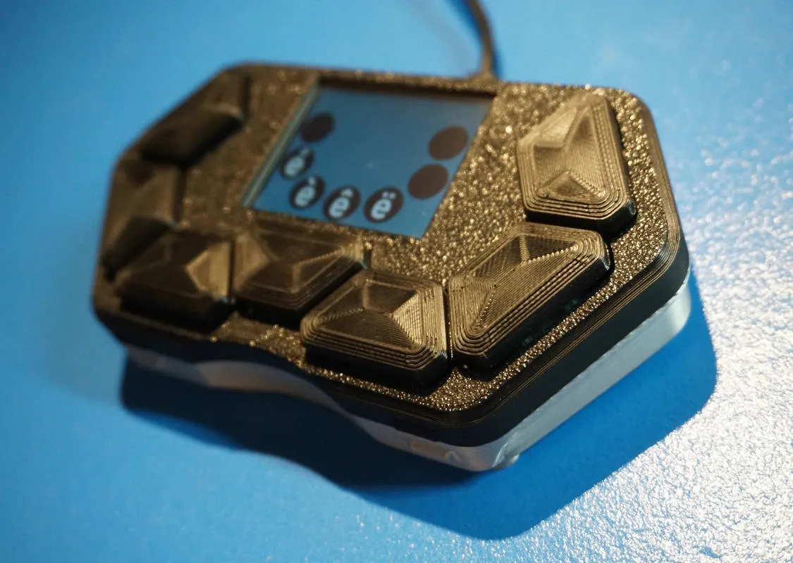
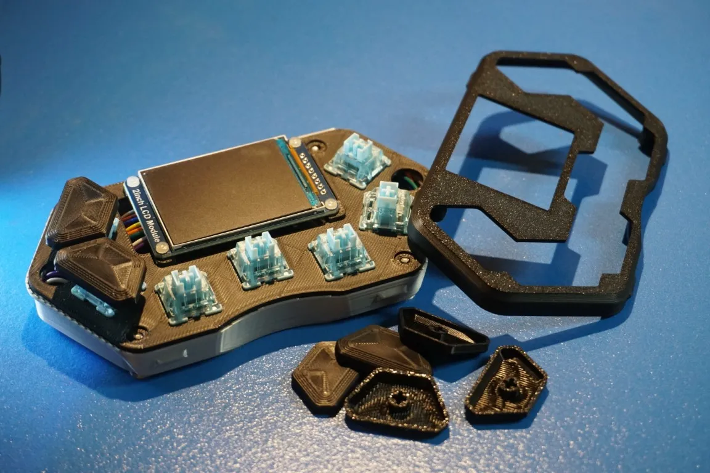
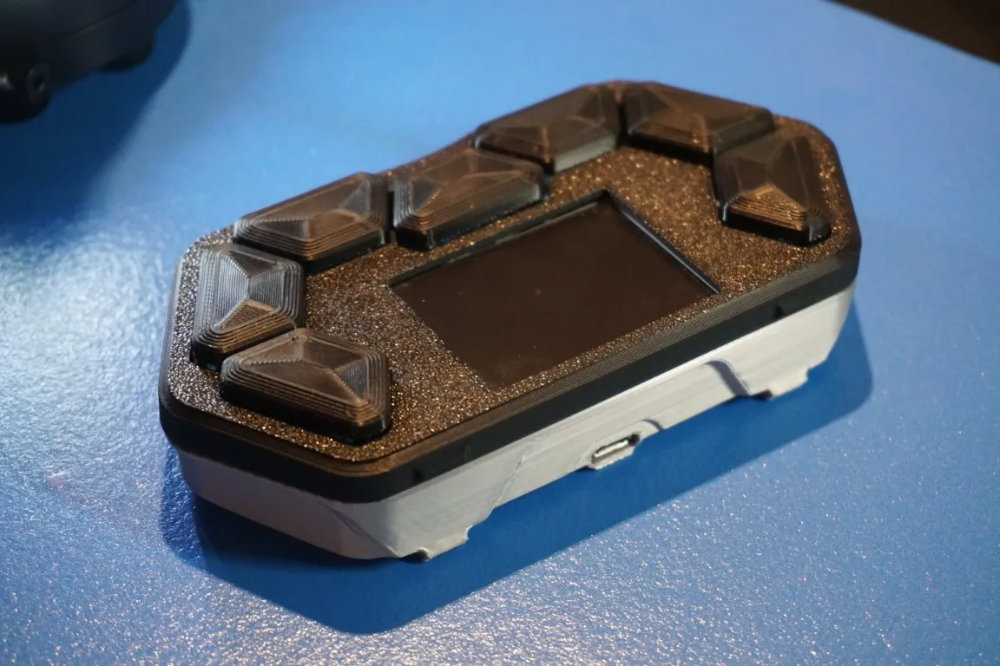
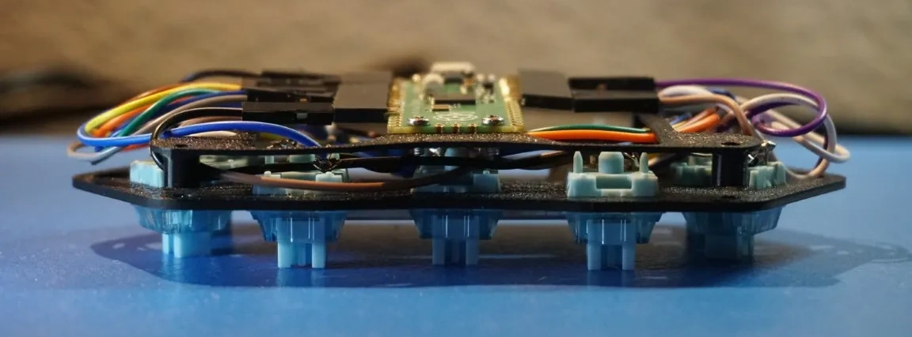
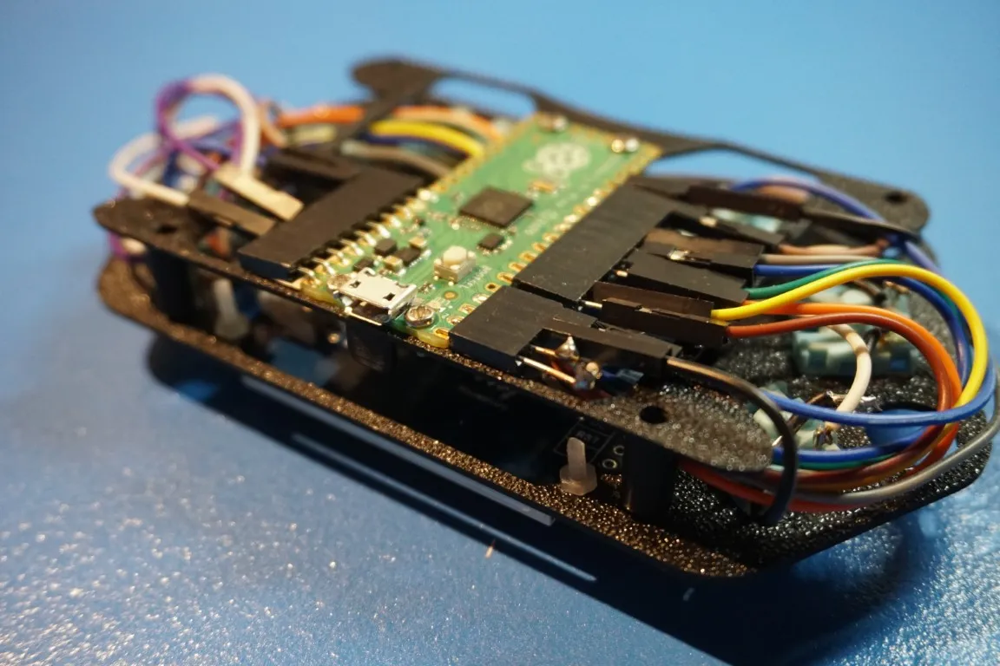

WIP
(What is it?)
(Why did you make this? How did you figure out where to begin?)
(What did you learn when making this? What are you most proud of here?)
 (Show some of the models in CAD)
(What would you do differently?)
Source code: https://github.com/ToxicPoison/symbol-macro-keypad